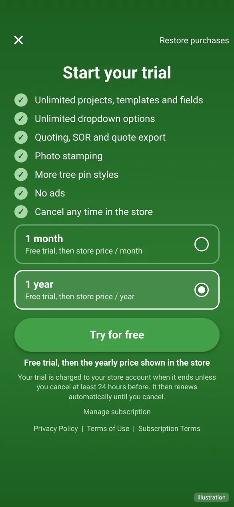
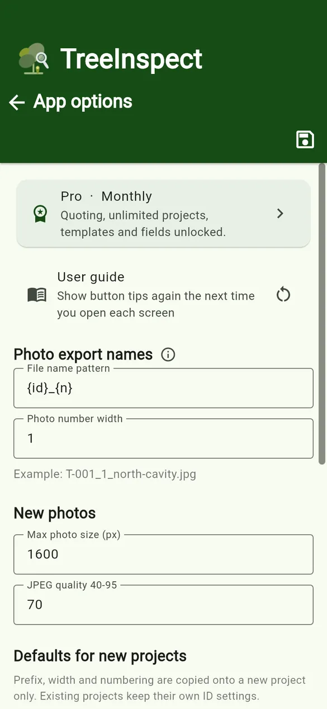

User guides › Pro subscription and Free limits
Pro subscription and Free limits
What Free includes, what Pro adds, free trials, cancelling and restoring a subscription.
Tree Inspect is free to download. Tree Inspect Pro is an auto-renewing subscription, monthly or yearly, with a free trial where one is offered. It is bought and managed through the App Store or Google Play.
Free and Pro
| Free | Pro | |
|---|---|---|
| Projects | Up to 6 | Unlimited |
| Templates | Up to 6 | Unlimited |
| Custom fields per project | Up to 10 | Unlimited |
| Options per dropdown or checklist | Up to 8 | Unlimited |
| Quoting, SOR and quote export | – | Yes |
| Photo stamping | – | Yes |
| CAD circle and CAD tree pin styles | – | Yes |
| Create a project from a spreadsheet | – | Yes |
| Adverts | Banner, and an advert before some exports | None |
Limits may change; the app and store page show the current details.
Start a subscription or trial
- Open App options and tap the Free/Pro row, or tap Purchase Pro when a Pro feature asks.
- Choose 1 month or 1 year. The price, and any free trial, are shown from the store.
- Tap the button (for example Try for free) and confirm in the store.


A trial is charged when it ends unless you cancel at least 24 hours before. The subscription then renews automatically until you cancel.
Cancel, switch or restore
- Cancel: tap Manage subscription in the app, or use your App Store or Google Play subscriptions page. You keep Pro until the end of the period you have paid for. Deleting the app does not cancel a subscription.
- Switch between monthly and yearly on the Pro screen. The app explains when the change takes effect.
- Restore purchases: on a new or reset phone, sign in with the same store account and tap Restore purchases on the Pro screen.
- Offline: if a period ends while the phone is offline, Pro may continue for a short grace period (currently 14 days) so site work is not interrupted.
Full details are in the Terms of Use.